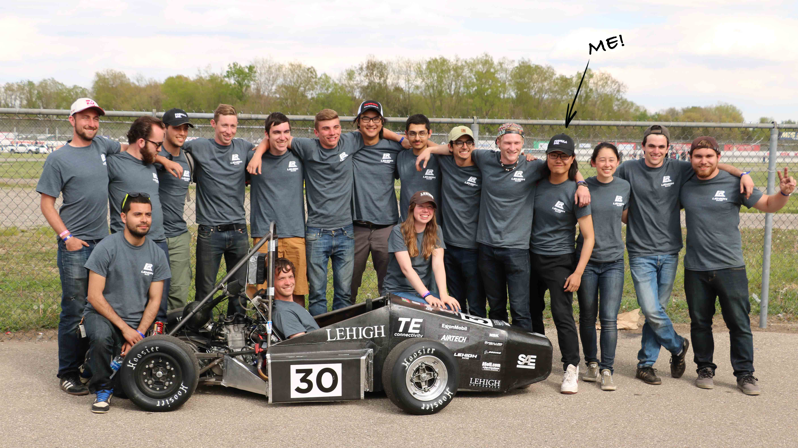
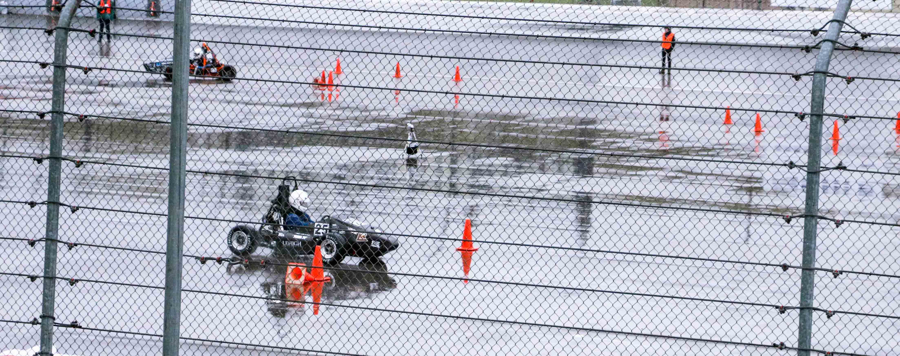
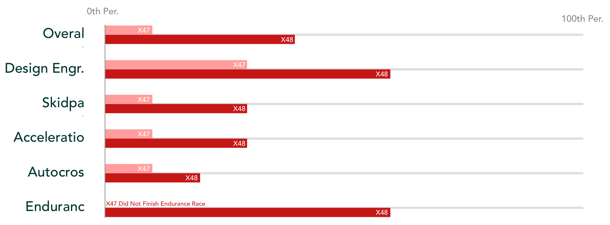
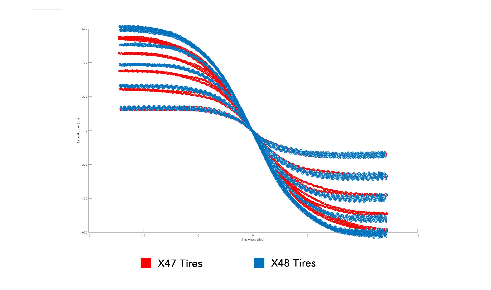
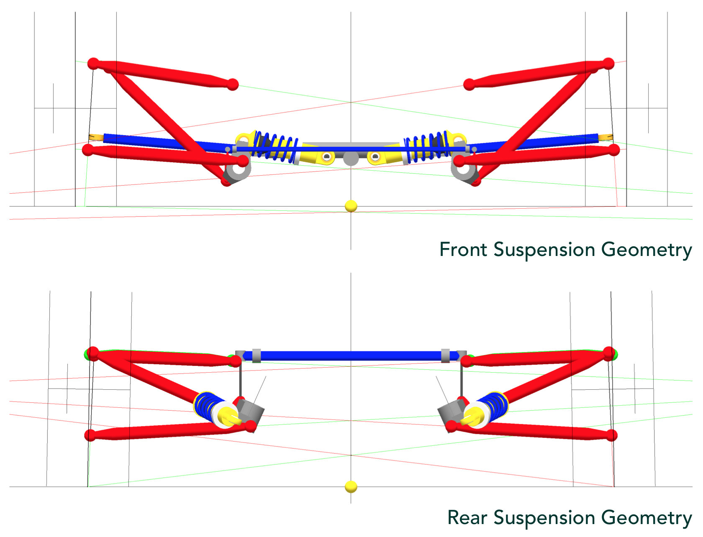
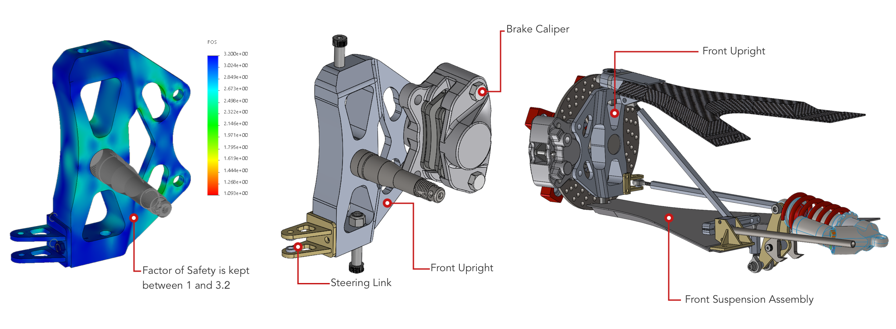
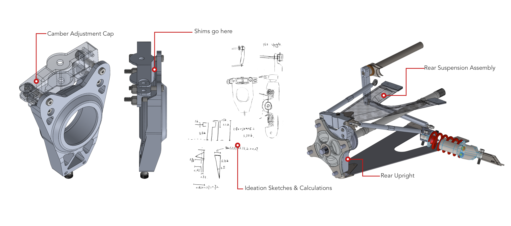
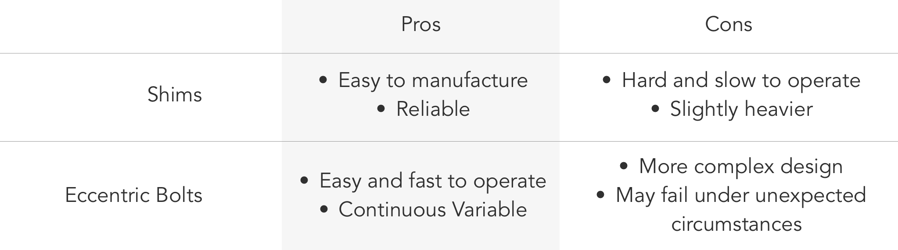

How might we design suspension that drives a race car faster?
Background: The Competition and Our Team

Formula SAE is a car racing competition in which college students teams design, manufacture, and race an open-wheel, single-seat race car. The competition is located at Michigan International Speedway every year in May, and is made up of eight different sections within two main events:
Static events (Design Engineering):
- Engineering design, in which we try to justify our design decisions to the judges;
- Cost analysis, in which we prove that every dollar spent corresponds to better performance;
- Business presentation, in which we try to persuade judges that our design is the best at its price range;
Dynamic events (Performance Evaluation):
- Acceleration;
- Skidpad, in which the car drive in a figure-8 track to test its cornering ability;
- Autocross, in which we drive the car individually around an obstacle circuit mapped out by cones. The fasted lap among three total laps is taken;
- Endurance, in which we drive the car individually around the autocross circuit for 13 laps to test its reliability. Overall time is taken;
- Fuel efficiency, in which the car's fuel consumption is recorded before and after the endurance race;
Our Lehigh Formula SAE team is made up of six minor groups, which supports different parts of design engineering: chassis, powertrain, suspension, driver ergonomics, electronics, and business. We have competed with over a hundred teams from all over the world every year.
How X48, Our Race Car, Performed

Racing is never predictable. The weather on the racing day was unstable in Michigan International Speedway. Some teams ran on a dry circuit, and some, including us, ran on a wet one, or even in the rain. The rain caught us off-guard and started to pour when we were running skidpad. Missing the chance to switch to rain tires, our team finished the race in the worst condition. In terms of which, the finishing time differences between dry and wet conditions can create large gaps. However, we still finished the competition by improving our rankings in every aspect:
How the Story Started
Analyzing X47
The X47 is our previous generation race car. It finished the 2017 Formula SAE competition at the 10th percentile. Analyzing the X47 is the first step for designing the X48.
1. Lacking tire performance
By analyzing the tire data and suspension geometry settings with Matlab and SusProg3D and comparing the results with our lap times and tire wear, we realized that we did not use the tires’ full potential due to imperfect suspension geometry and actuation settings.
2. Under-tuned vehicle set-up
Due to the delay in manufacturing delivery, we lost a lot of time for testing and tuning. The X47 was severely under-tuned. This led to an unstable vehicle dynamics, which gave the driver a hard time.
3. Overweight Body
The X47 is the heaviest among similar non-aero cars. Over-engineered and under-optimized parts take most responsibilities.
Thus, the goals for X48 are:
- Optimize geometry and actuation to fit tire characteristics
- Finish manufacturing the car early for testing and tuning
- Reduce weight by at least 10%
Design and Engineering of X48
Overviewing the Suspension System
The suspension system is one of the most sophisticated systems on a race car. Suspension setup greatly influences how the car handle, so designing a lightweight, adjustable, reliable, and, most importantly, the suitable suspension system is crucial.
Suspension system design can be divided into four steps:
- Understanding the tires;
- Setting suspension geometry and actuation layout;
- Designing, validating and manufacturing parts;
- Testing and tuning.
In this section, I will briefly explain some essential concept and how we made our design decisions in each step.
Grippier Tires
Visualizing tire data with Matlab
Hoosier, a performance tire manufacturer, released its new tires by the time we started designing the X48. By analyzing the data provided by them, we found that the new tires generate about 550lbf/deg of lateral force, 20lbf/deg more than the old ones.
New tires were 16 inches in diameter, 2 inches smaller than the old ones. The smaller size cuts the weight down by 22% and increases tire stiffness by 4%. Less weight allows faster acceleration, and higher stiffness makes vehicle dynamics more sturdy.
Nimbler Vehicle Dynamics
Optimizing geometry & actuation with SusProg3D and SolidWorks
We came up with 10+ geometry and actuation layout proposals with the help from SusProg3D and SolidWorks. The best one was picked based on:
- Ground clearance (if any of the parts touches the ground in any condition)
- Parts clearance (if any of the parts touches other parts in any condition)
- Geometry characteristics (if the tires are put under the best condition at all time)
- Actuation efficiency (if we have used all the potentials of the springs and dampers)
- Accessibility (if we can change settings quickly enough)
Optimized geometry and actuation generate higher mechanical grip and stabler vehicle dynamics. The connection between the driver and the car is greatly enhanced.
Lighter Weight
Taking out unnecessary material by finite element analysis
The uprights have to be as light as possible and strong enough to take the load from the tires, so we made them out of grade 7 aluminium. The material has a high strength-mass ratio, so it is also used on jets and Formula 1 cars. Computer numerical controlled (CNC) machining is the best manufacturing option because of its low cost, high precision, and the ability to carve complex shapes.
15% of the weight was cut down by redesigning the front and rear uprights. We did finite element analysis with SolidWorks to see the load distribution and cut out the areas not taking loads. To lower the material used as much as possible while keeping it from failing, the factor of safety was kept between 1 and 3.2.
More Flexible Adjustments
Adding camber adjustments by implementing shims
To exploit more potential out of the new tires, we decided to make rear camber adjustable, which means adding a camber adjustment mechanism to the rear upright. Two solutions, eccentric bolts, and shims were proposed:

Although eccentric bolts allow quicker and continuously variable adjustment, it is harder to manufacture and more prone to failure. Shims, on the other hand, suit us better with its reliability and manufacturing easiness.
Testing and Tuning of X48
''We build a monster, and spend a year understanding it.''
-- James Allison, Technical director of Mercedes AMG F1 team
Even Mercedes AMG, the three-time consecutive constructor champion, is unable to fully predict the performance their car, there is no way we can. This is why testing and tuning is so important.
By delivering the car on schedule in March, we had a sufficient two-month period to test and tune our car before the competition starts.
First, We made sure different parts functioned well and the suspension had enough clearance to articulate. Smooth acceleration and braking and emergency brake tests were conducted to ensure reliability.
Then, suspension settings were tested intensively to find the most optimized solution. to work around the lack of expensive and intricate sensors, we mounted a GoPro on the car to record all suspension movements. Tire wear was examined and recorded after each trial. We combined the results with the driver's feedbacks to decide what and how much change is needed. Spring rates, damper parameters, anti-roll bar stiffnesses, camber angles, and many other parameters were tuned repeatedly for maximum grip and neutral-steering in corners, acceleration, and braking.
Together with better engine performance, we dropped about 0.8 sec in skidpad and about 3 sec in acceleration compared to the X47.
Visions for X49
Immediately after the 2018 competition, another round of reviewing, brainstorming, troubleshooting, and problem-solving process began. By the time you read this, the X49 is probably already fully designed, manufactured, and is running in a parking lot of Lehigh University with the latest innovations.